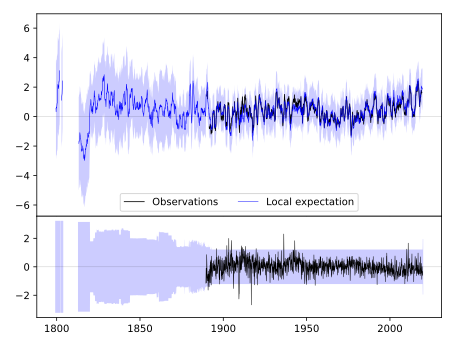
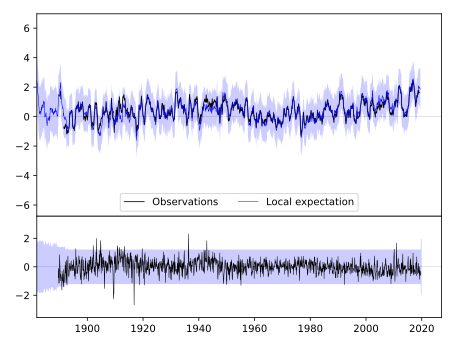
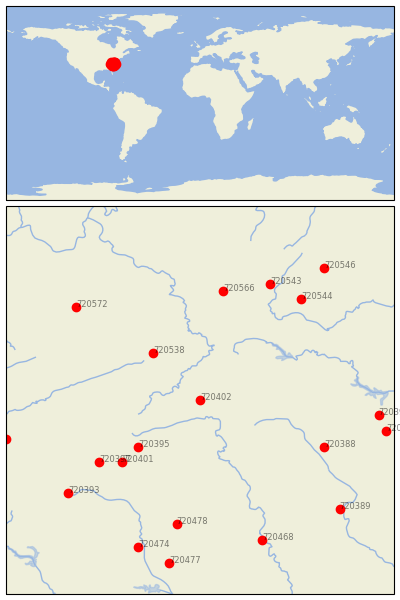

MT AIRY 2 W [USA]


| Neighbour | Name | Country | Distance | Lon/Lat | Years |
|---|
| 720402 | MT AIRY 2 W | USA | 0 | -80.7, 36.5 | 1889-2019 |
| 720538 | BURKES GARDEN | USA | 85 | -81.3, 37.1 | 1892-2019 |
| 720395 | LENOIR | USA | 97 | -81.5, 35.9 | 1871-2019 |
| 720401 | MORGANTON | USA | 126 | -81.7, 35.7 | 1879-2019 |
| 720397 | MARION 2 NW | USA | 146 | -82.0, 35.7 | 1879-2019 |
| 720566 | LEWISBURG 3 N | USA | 157 | -80.4, 37.9 | 1893-2019 |
| 720388 | CHAPEL HILL 2 W | USA | 158 | -79.1, 35.9 | 1820-2019 |
| 720478 | WINTHROP UNIV | USA | 179 | -81.0, 34.9 | 1893-2019 |
| 720543 | HOT SPRINGS | USA | 184 | -79.8, 38.0 | 1892-2019 |
| 720544 | LEXINGTON | USA | 184 | -79.4, 37.8 | 1861-2019 |
| 720572 | WILLIAMSON | USA | 194 | -82.3, 37.7 | 1892-2019 |
| 720393 | HENDERSONVILLE 1 NE | USA | 203 | -82.4, 35.3 | 1879-2019 |
| 720392 | HENDERSON 2 NNW | USA | 207 | -78.4, 36.3 | 1892-2019 |
| 720468 | CHERAW | USA | 212 | -79.9, 34.7 | 1882-2019 |
| 720396 | LOUISBURG | USA | 219 | -78.3, 36.1 | 1891-2019 |
| 720474 | SANTUCK | USA | 223 | -81.5, 34.6 | 1891-2019 |
| 720389 | FAYETTEVILLE PWC | USA | 224 | -78.9, 35.1 | 1871-2019 |
| 720506 | NEWPORT 1 NW | USA | 230 | -83.2, 36.0 | 1879-2019 |
| 720546 | STAUNTON WATER TRMTM | USA | 236 | -79.1, 38.2 | 1893-2019 |
| 720477 | WINNSBORO | USA | 236 | -81.1, 34.4 | 1887-2019 |